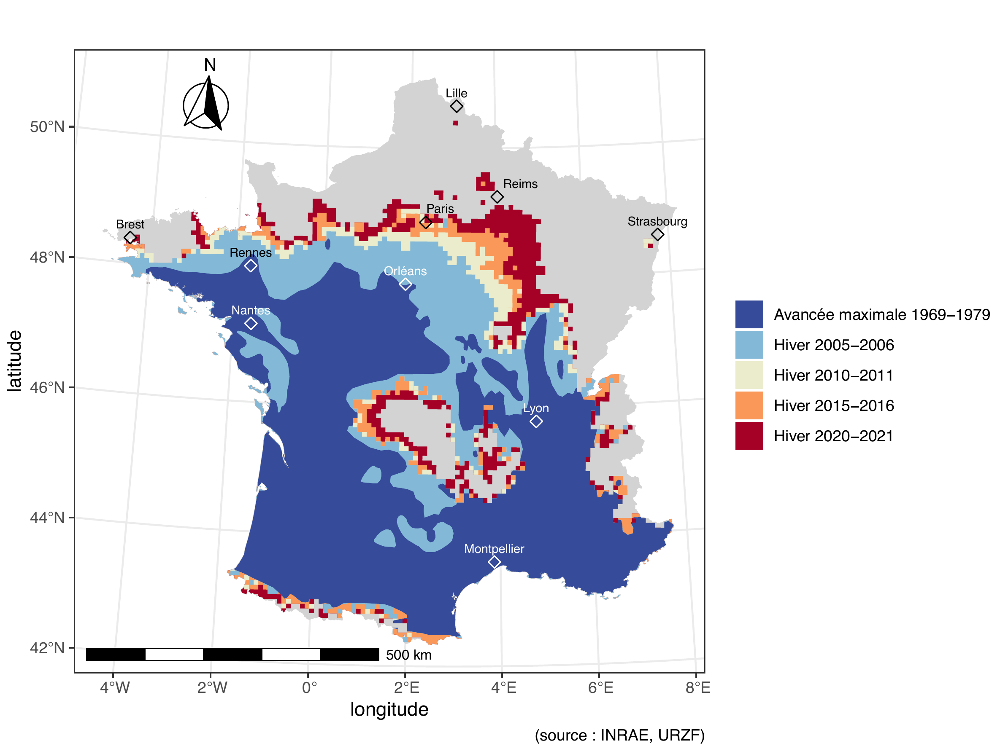
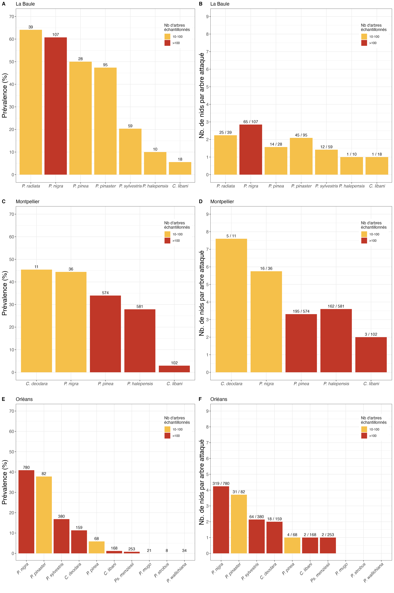

Projet OSTils
OSTils [Occurrence Spatiale et Temporelle des chenilles urticantes de processionnaire du pin, et outILS de prévention des risques] est un projet de recherche coordonné par Jérôme Rousselet (Unité de Recherche de Zoologie Forestière URZF INRAE Orléans) portant sur la chenille processionnaire Thaumetopoea pityocampa. Le projet comporte 4 tâches dont la cartographie de l’aire de distribution de la processionnaire du pin à l’échelle nationale, le développement d’un détecteur de processions, l’établissement d’un classement des essences à risque et l’identification des déterminants des choix de plantation des particuliers.
Le CBGP est impliqué dans la cartographie de l’aire de distribution de T. pityocampa en France et au travail portant sur le classement des essences à risque en France.
Cartographie de l’aire de distribution de T. pityocampa en France
L’aire de distribution de nombreuses espèces se déplace sous l’effet du changement climatique. C’est le cas de la processionnaire du pin (Thaumetopoea pityocampa), un papillon défoliateur des conifères originaire de la zone méditerranéenne qui remonte progressivement vers le nord de la France et en altitude depuis plusieurs décennies (Roques et al. 2015). L’une des tâches du projet OSTils consiste à cartographier le front de colonisation de cet insecte. La figure ci-dessous montre les résultats que nous avons obtenus dans le cadre du projet OSTils (front 2020-2021) et les données précédemment collectées par l’URZF au cours d’autres projets. Le travail de terrain 2020-2021 a été réalisé par les équipes des unités URZF (Alexis Bernard, Aurélien Navarro et Antonin Ageorges) et CBGP (Julien Pradel et Alain Talbi). Les analyses ont été réalisées par Jérôme Rousselet (URZF), et Carole Kerdelhué (CBGP) et Jean-Pierre Rossi (CBGP).
La figure ci-dessous regroupe les données collectées depuis plusieurs décennies sous l’impulsion d’Alain Roques et Jérôme Rousselet (URZF).

Evolution de l’aire de distribution de la processionnaire du pin Thaumetopoea pityocampa en France durant les 50 dernières années. D’après Rossi (2023).
Vers un classement des essences à risque en France
Tous les arbres ne sont pas attaqués par la processionnaire avec la même intensité. Il en découle que selon l’essence plantée à un endroit, le risque que le voisinage soit confronté à des chenilles en procession varie. Ceci est bien connu mais il n’existe pas de classement des espèces d’arbres suffisamment précis pour pouvoir conseiller les gestionnaires lorsqu’ils choisissent les essences utilisées dans les espaces verts. Un travail de quantification initial a été réalisé par l’URZF et le CBGP il y a quelques années (Rossi et al. 2016, figure 3) mais il ne concerne que la région d’Orléans. De par les variations du climat, ces résultats ne sont pas nécessairement transposables au reste du pays. L’un des objectifs du projet OSTils est de remédier à ce problème en réalisant de nouvelles campagnes de mesure sur le terrain dans trois villes caractérisées par un climat contrasté : Montpellier, Nantes et Orléans. La figure ci-dessous montre les résultats de ce travail.

Prévalence (arbres infestés/arbres recensés exprimés en %) (panneau de gauche) et nombre moyen de nids par arbre infesté (panneau de droite) pour chaque agglomération étudiée. Seuls les espèces d’arbres pour lesquelles au moins 10 individus ont été étudiés sont représentées. Les nombres affichés au-dessus de chaque barre correspondent au nombre total d’arbres étudiés dans le panneau de gauche et au nombre d’arbres infestés/nombre d’arbres étudiés dans le panneau de droite. D’après Kerdelhué et al. (2024).
Distribution des arbres hôtes de la processionnaires du pin urbain échantillonnés dans le cadre du projet OSTils
Les cartes ci-dessous indiquent la position des arbres étudiés pour réaliser la classement des essences. Les détails de l’échantillonnage sont indiqués dans Kerdekué et al. (2024).
NoteAstuce
Passez votre souris sur la carte pour zoomer et visualiser des informations sur les arbres.
La Baule
Montpellier
Orléans
Références
Kerdelhué, C., Rossi, J.-P., Bernard, A., Fanjas-Mercere, T., Gross, L., Nusillard, B., Pineau, P., Pradel, J., Talbi, A., Rousselet, J. 2024. Dataset documenting prevalence and counts of pine processionary moth tents on local host trees in 3 regions of France with different climatic environments. Data in Brief 53, 110208. https://doi.org/10.1016/j.dib.2024.110208
Roques A (2015) Processionary Moths and Climate Change: An Update. Springer.
Rossi J-P (2023) Climat et invasions biologiques. In Lannou, C., Rasplus, J. Y., Soubeyrand, S., Gautier, M., & Rossi, J. P. Eds Crises sanitaires en agriculture: Les espèces invasives sous surveillance. Editions QUAE, pp 71–78
Rossi J-P, Imbault V, Lamant T, Rousselet J (2016) A citywide survey of the pine processionary moth Thaumetopoea pityocampa spatial distribution in Orléans (France). Urban Forestry & Urban Greening 20:71–80.
Acronymes
CBGP : Cendre de Biologie pour la Gestion ds Populations
URZF : Unité de Recherche en Zoologie Forestière